Activity: Drawing view placement
This activity covers the typical workflow for placing drawing views of a Solid Edge part. All drawings are different, but the basic approach to view creation, layout, manipulation, and editing is the same in all Solid Edge environments. In fact, the steps for placing assembly views are the same steps used for creating part views on a drawing sheet. This activity provides you with a basic understanding of the workflow used to create drawing sheets quickly and effectively.
After completing this activity, you will be able to:
-
Place multiple views of a part on a drawing sheet.
-
Manipulate the views.
-
Shade a drawing view.
-
Modify drawing view properties.
-
Create principal drawing views.
-
Create Auxiliary views.
-
Create Section views.
-
Create Detail views.
Create a new ISO draft document.
-
Choose the File menu → New → ISO Metric Draft.
Position the cursor over the Sheet1 tab (lower left corner) and right-click. On the shortcut menu, click Sheet Setup.
On the Sheet Setup dialog box, click the Background tab. Set the Background sheet to A1-Sheet.
This sets the background and sheet size for the drafting sheet.
Select the Show background check box.
Click Save Defaults to save A1-Sheet as the default border/background for this document.
By saving defaults now, any new sheets created in this file will automatically default to A1-Sheet.
Click OK.
Choose the Fit command to display the entire drawing sheet in the active window.
Click the File menu → Settings → Options.
Click Drawing Standards. On the Drawing Standards page, set the Projection Angle to Third and the Thread Display Mode to ISO/BSI, and then click OK.
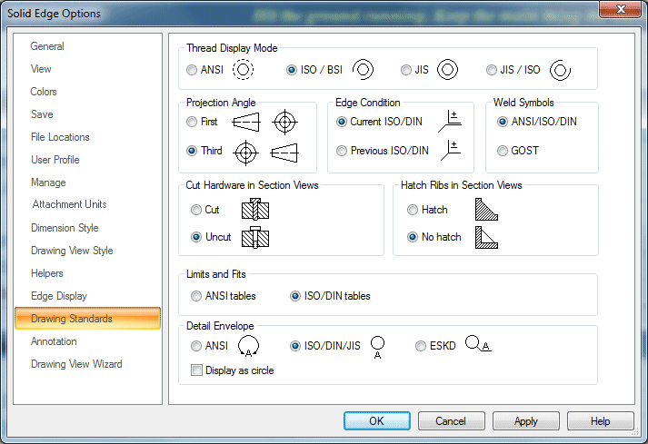
You will place three drawing views using the View Wizard command without exiting drawing view placement mode. The first view placed is the primary view. The default view orientation of the primary view placed is based on the model type, as shown in the following table:
|
This model type |
Produces this view orientation for the first view |
|
Part |
Front orientation |
|
Sheet metal (as modeled) |
Front orientation |
|
Sheet metal (flattened) |
Top orientation |
|
Assembly |
Isometric orientation |
|
Weldment (.pwd) |
Isometric orientation |
On the Home tab → Drawing Views group, choose the View Wizard command
 .
.
In the Select Model dialog box, select bearblk.par from the activity folder and click Open.
On the View Wizard command bar, click Drawing View Wizard Options  , and then observe the options that are available for creating a drawing view from
a part or sheet metal model. Do not make any changes. Click OK.
, and then observe the options that are available for creating a drawing view from
a part or sheet metal model. Do not make any changes. Click OK.
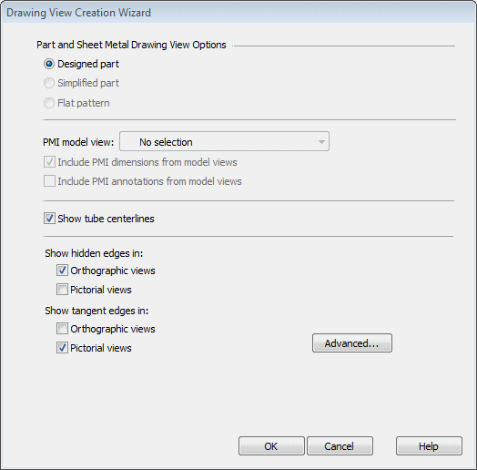
Because the first view placed for a part model uses a front orientation, you do not
have to specify this. However, if you need to select a different view orientation
or if you want to select a user-defined named view, you can click View Orientation  on the View Wizard command bar, and then select the desired orientation from the list.
on the View Wizard command bar, and then select the desired orientation from the list.
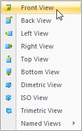
The drawing scale is displayed on the View Wizard command bar. Make sure it is set to 1:1. You can use the Scale List to select the value.
Solid Edge automatically assigns the scale, which makes the views as large as possible and still fit on the drawing sheet.
A Visible and Hidden Lines (VHL) preview of the primary view at a 1:1 scale is displayed at your current cursor location on the drawing sheet. Move the drawing view to the approximate location shown, and click.
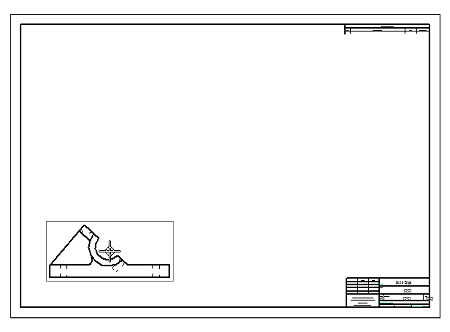
Notice that the command bar has changed and the Principal View command is running now.
You can continue to place views by folding them from the primary view that you placed with the View Wizard command.
Move the cursor up from the primary view, as shown. Notice that this view is also displayed as a VHL preview.
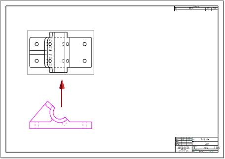
Click to place a top view.
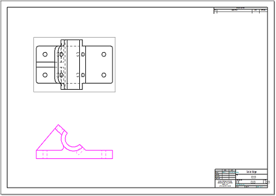
Move the cursor onto the primary view again, as shown below.
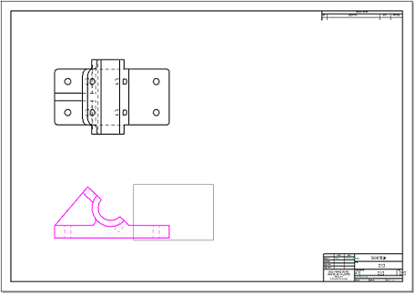
Now move the cursor to the right of the primary view.
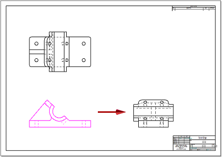
Click to place a view of the right side.
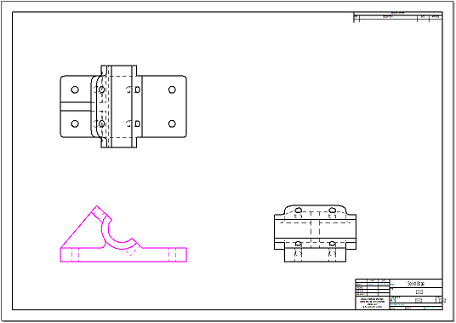
Move the cursor onto the primary view again, and then diagonally to place an isometric orientation of the model in the upper-right corner of the sheet, as shown.
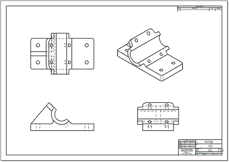
Right-click to end drawing view placement mode.
Your drawing should now look like this one:
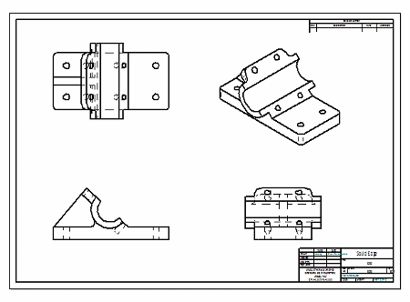
There is an alternative method to select and place the drawing views you created so
far. Instead of placing the first view (the primary view) and then placing additional
views using it as the source, you can place all the views at once while the View Wizard command is running. To do this, before you click to place any view, click the Drawing View Layout option  on the View Wizard command bar. This opens the Drawing View Creation Wizard (Drawing View Layout) dialog box. For an as-designed part or sheet metal model, the
wizard selects a front view as the primary view by default. You can use the dialog
box to select additional views that you want to place with it.
on the View Wizard command bar. This opens the Drawing View Creation Wizard (Drawing View Layout) dialog box. For an as-designed part or sheet metal model, the
wizard selects a front view as the primary view by default. You can use the dialog
box to select additional views that you want to place with it.
For example:
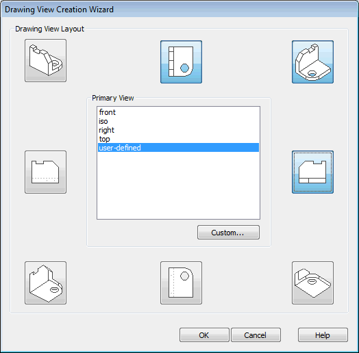
When you click OK, all the selected views are ready to place with one click.
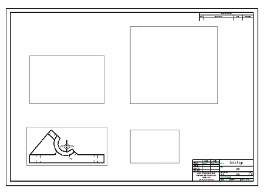
The layout buttons in the dialog box produce different results based on your current drawing standard.
If you get the wrong view orientation, you can delete a view and then select the View Wizard command and the View Orientation button to choose the specific common or named view direction that you want.
-
On the Quick Access toolbar, click Save, and in the Save As dialog box, save the file as bearblk.dft.
On the Home tab → Drawing Views group, choose the Auxiliary command . Notice that a fold line attaches to the cursor. If IntelliSketch locates a point, the line disappears. Move the cursor until IntelliSketch ceases to locate a point and the line displays.
Move the cursor across the front drawing view until the fold line attaches to the model edge as shown, then click to select this edge as the folding line.
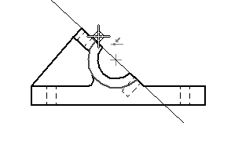
Position the view as shown and click. This view may overlap other views because of limited space on the drawing sheet. In the next step, you move the view.
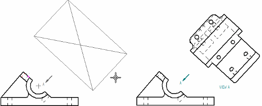
Click the Insert Working Sheet button located in the sheet tab tray.
This adds a new sheet (Sheet2) to the draft document. To switch between sheets, click on the tab of the sheet you want to switch to.

Click the Sheet1 tab to display the auxiliary view you created.
Position the cursor over the auxiliary view so that the view highlights and then right-click. On the shortcut menu, click Properties.
In the High Quality View Properties dialog box, on the General tab, change the sheet from Sheet1 to Sheet2, and click OK. This moves the auxiliary view to Sheet2.
Click the Sheet2 tab to make Sheet2 the active sheet.
Right-click on Sheet 2 and use the Sheet Setup dialog to ensure that the Background is set to an A-1 sheet.
Drag the auxiliary view towards the upper-left corner, as shown.
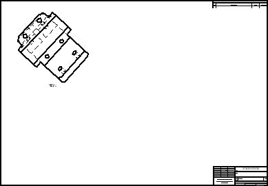
Place a cutting plane in the top view. This cutting plane will be used to create a section view.
Click the Sheet1 tab to make it the active sheet.
In the Drawing Views group, choose the Cutting Plane command
.
Select the Top view as the drawing view where the cutting plane will be drawn. The window changes to the Cutting Plane Line mode.
Click the Zoom Area button, and drag a box around the top view to zoom in on it.
The Line command is active for you to draw a profile line for the cutting plane .
Draw the sequence of lines shown in the following figure. As you draw, locate the midpoint of the left vertical edge and the center point of the upper-right hole. Move the cursor over the elements (without selecting them) to activate them for keypoint location. A dashed line appears when you are aligned, horizontally or vertically, with the midpoint or center point of a circle.
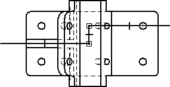
IntelliSketch relationships locate keypoints automatically. If the keypoints do not highlight,
choose the Sketching tab→IntelliSketch group→IntelliSketch command  , and on the Relationship page of the dialog box, ensure the Midpoint and Center point options are checked.
, and on the Relationship page of the dialog box, ensure the Midpoint and Center point options are checked.
On the Home tab→Close group, click Close Cutting Plane
 .
.
To complete the direction step, position the cursor below the drawing view, and click to position the cutting plane arrows as shown.
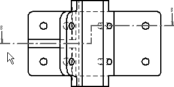
Create a section view using the cutting plane defined in the previous step.
Fit the view.
In the Drawing Views group, choose the Section command .
Select the cutting plane line created on the top view as the cutting plane from which the section view will be created.
On the Section view command bar, click the Model Display Settings option
 .
.
In the dialog box, clear the Hidden edge style check box. Click OK in the message box, and then click OK in the Drawing Properties dialog box. This turns off hidden edges in the cross section view.
Place the cross section below the top view as shown.
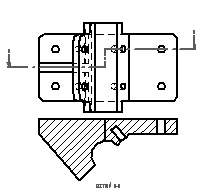
Use the Properties dialog box to move the section view to Sheet2.
Click the Sheet2 tab to view the second sheet. Reposition the section view, below the auxiliary view.
To change the cross-hatch properties, select the view, then right-click to display the shortcut menu. Click Properties from the shortcut menu.
In the High Quality View Properties dialog box, click the Display tab.
Under the Show fill style check box, uncheck the Derive from part check box. From the Show fill style list, select ANSI32(Steel). Click OK in the message box, and then click OK to close the dialog box.
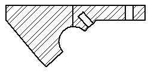
Save the document.
Return to Sheet1.
Choose the Detail command .
Click to place the center of the detail view circle on the front view, and then click again to define the radius of the detail view circle. The view circle should resemble the one shown in the following illustration.
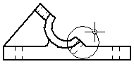
Move the large circle attached to the cursor away from the front view. Click to place the detail view as shown below.
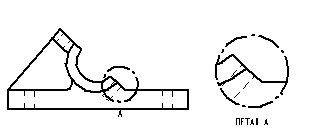
Move the detail view to Sheet2 by changing the view properties.
Switch to Sheet2.
On Sheet2, position the detail view to the right of the auxiliary and section views as shown.
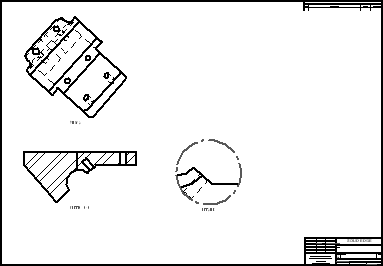
Return to Sheet1.
Click the isometric drawing view.
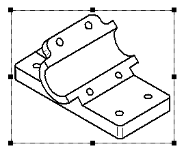
On the Select command bar, click the Shading Options button
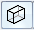
, and then choose Grayscale Shaded with Edges from the list.Click in an open area of the drawing sheet to deselect the iso drawing view. Notice the out-of-date border around the iso drawing view.
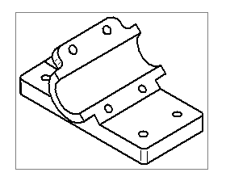
In the Drawing Views group, choose the Update Views command  .
.
The iso drawing view now displays as shaded.
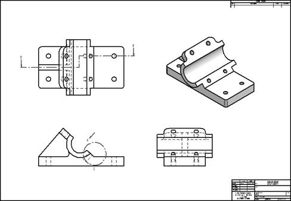
This completes the activity. Save and close the file.
In this activity you learned how to place drawing views, auxiliary views, section views and detail views. You also learned how to use drawing sheets to organize the drawing views.
-
Click the Close button in the upper-right corner of the activity window.